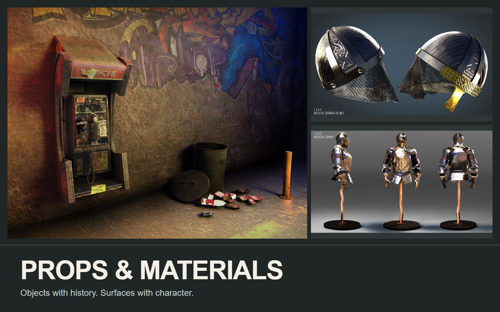

Props
Props & Material Studies
Small objects, considered surfaces.

THE PROJECT
Prop production through modeling, UVs, materials, and scene presentation: a weathered telephone booth, armor, helmets, lanterns, and smaller studies.
- MY CONTRIBUTION / FOCUS
- Prop look development
Selected prop and look-development work from the supplied archive.
PROCESS & DESIGN
Small objects, different surface problems.
The telephone-booth sequence follows isolated construction and UV checking into texture maps, material development, and a finished lit scene. The other studies explore metal, wear, ornament, and small organic forms.
Form into finish
The lantern moves from a neutral geometry view to a red-and-gold material presentation.
Comparing materials
Related decorative forms offer a direct comparison of color, reflection, and surface detail.
01 / Props & Material Studies
Lantern: geometry to materials
The neutral viewport and finished render show the same prop before and after surface work.
02 / Props & Material Studies
Surface variations
Related decorative forms shown with checker inspection and several material treatments.
03 / Props & Material Studies
Additional prop work
A separate weapon study explores a slender silhouette and contrasting surface accents.
04 / Props & Material Studies
Telephone booth / finished scene
05 / Props & Material Studies
Telephone booth / construction & surfaces
Original project animation; silent presentation.
06 / Props & Material Studies